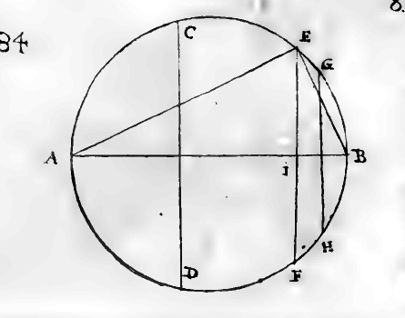

Scholium de Methodo Indiuisibilium, FINIS & Errata¶


SCHOLIVM.
Haec ego Theoremata, quorum nonnulla ex principijs geometricis deduxeram, Caualleriana methodo expeditius demonstraui, quamquam hemisphaerij, & conoidis parabolici centra grauitatis rimatus iampridem fuerit geometricè subtilissimus nostri aeui Archimedes Lucas Valerius. Fateor methodum indiuisibilium magnum esse in geometria compendium, praesertim in dimensionibus solidorum, quantumuis irregularium, opus plenum ambagibus si geometricis rationibus velimus vti. Incedendum tamen est cautè, contingit enim non rarò, vt ratiocinatio illa Cauallerij minimè succedat, praesertim vbi de superficiebus solidorum rotundorum agitur: en exemplum.
Esto sphaera, cuius axis AB, quae secetur quibuslibet planis ad axem erectis CD, EF, GH, &c. (in marg. tab. 10. fig. 84.), dicam totam sphaerae superficiem ad sui portionem EBF habere eandem rationem, quam habet circulus ad sui segmentum EBF. Patet enim sectiones omnes CD, EF, GH, &c. esse circulos circa diametros CD, EF, GH, &c. inter se parallelos; quare etiam eorundem circulorum peripheriae inter se aequidistabunt; itemque diametri inter se parallelae erunt. Et quia peripheria circa diametrum CD ad illam
f. 0099 · p. 82circa diametrum EF est vt diameter CD ad EF, pariterque peripheria circa diametrum EF ad peripheriam circa diametrum GH est vt diameter EF ad diametrum GH; erunt coniunctim omnes peripheriae circa CD, EF, HG, ad omnes peripherias circa EF, GH &c., vt omnes diametri CD, FE, HG &c. ad omnes diametros EF, GH &c.: hoc est tota sphaerae superficies AEBF ad sui partem EBF habebit eam rationem, quam habet circulus ad sui segmentum EBF, quod tamen falsum est; circulus enim ACBD ad sui segmentum EBF minus semicirculo maiorem habet rationem, quam quadratum AB ad quadratum rectae BE, hoc est quam superficies sphaerae ad sui portionem EBF; nàm circulus, cuius radius AB, aequalis est toti sphaerae superficiei, circulus verò, cuius radius BE, aequatur superficiei EBF eiusdem sphaerae; quare superficies sphaerae ad sui portionem EBF est vt quadratum ex AB ad quadratum ex BE, seu vt triangulum ABE ad triangulum EIB: ponitur verò esse in eadem ratione circulus AB ad sui segmentum EBF, vel semicirculus AEB ad trilineum EBI; ergo & reliqua spatia in eadem ratione erunt: hoc est segmenta AEC, EBG simul, ad segmentum EBG, erunt vt triangulum ABE ad triangulum EIB, vel rursus vt quadratum AB ad quadratum BE, imò vt aggregatum quadratorum AE, EB ad ipsum EB; sed circuli segmentum, cuius basis AE simile ipsi EBG cadit intra segmentum ACE; ergo segmentum ACE ad segmentum EGB maiorem habebit rationem, quam quadratum AE ad quadratum EB, & coniunctim duo segmenta AEC, EBG ad segmentum EBG maiorem etiam proportionem habebunt, quam duo quadrata AE, EB simul, hoc est ipsum AB ad quadratum EB, vel quam triangulum AEB ad ipsum EBI; quare & duae simul antecedentes ad duas simul consequentes, hoc est semicirculus ad trilineum AGBI, seu duplum ad duplum, circulus nimirum ad sui segmentum EBF maiorem habebit rationem, quam triangulum AEB ad ipsum EBI, vel maiorem quam quadratum AB ad BE, quod &c.
E contra si conum pro sphaera praedicto ratiocinio subijcias, verum deduces, ita vt tota superficies conica ad sui partem intra verticem coni, & planum eius basi aequidistans intersectam sit vt triangulum per axem ad triangulum illud inter dictum verticem, & praedictum planum interceptum, quod
f. 0100 · p. 83pars est eiusdem per axem trianguli.
Hinc vides, in solidorum rotundorum superficiebus dimetiendis, quam incerta sit methodus caeteroquin ingeniosissima indiuisibilium.
F I N I S.
Errata & Correctiones
Pag. |
lin. |
Errata. |
Correctiones. |
|---|---|---|---|
4 & alibi |
31 |
eorumdem |
eorundem |
8 |
37 |
Quod si datis duabus rationibus |
Quod si dentur duae rationes |
10 |
in marg. |
fig. 9. |
fig. 10. |
10 |
in marg. |
fig. 10. |
fig. 12. |
12 |
in marg. |
fig. 10. |
fig. 12. |
13 |
13 |
deriuantium |
deriuatorum |
15 |
23 |
ex ED in EB |
ex ED in AB |
19 |
prima |
Deleantur haec verba: |
In inferiori figura eiusdem tertij elementi. |
27 |
15 |
eadem rationem |
eadem ratione |
31 |
4 |
LK |
LM |
32 |
33 |
℞ ad ✠ |
℞ ad X |
33 |
12 |
NIQMHP |
NI, QM, HP, |
34 |
29 |
centtum |
centrum |
41 |
6 |
ad F ad G |
ad E ad G |
42 |
vltima |
. Pariterq; |
, pariterq; |
43 |
10 |
triangula latera |
trianguli latera |
44 |
18 |
CE ad EF |
CD ad DF |
46 |
23 |
& OB |
& OE |
51 |
in marg. |
tab. 1. fig. 5. |
tab. 7. fig. 57. |
72 |
13 |
aequale esse |
aequalia esse |
75 |
vltima |
circuli |
circulos |
Ad exprimendum plus more algebrico, ex penuria signi opportuni +, vsi sumus hoc alio, etsi non vsitato ✠, quo etiam non rarò vtimur in supplementum literarum.